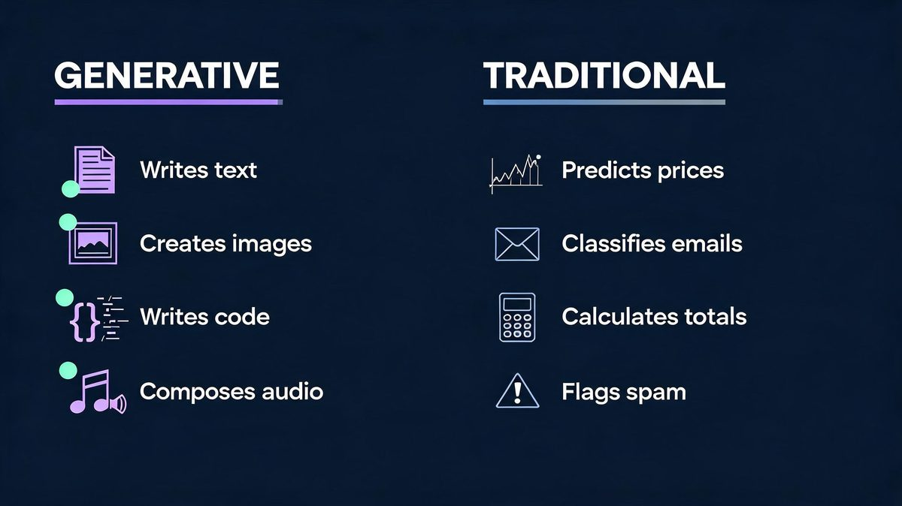
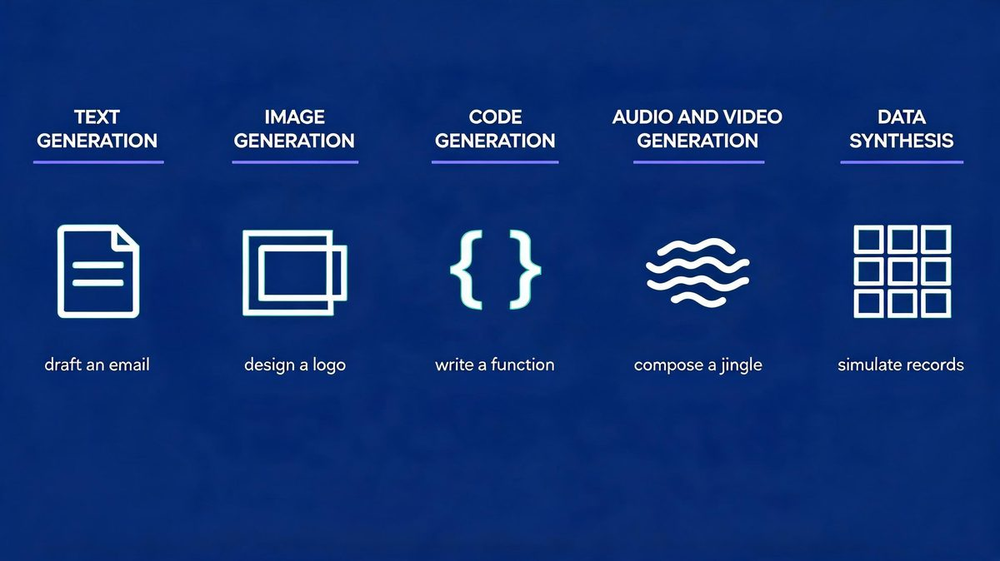
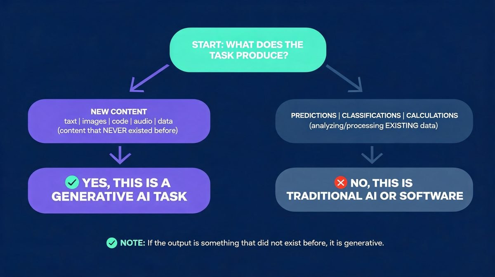
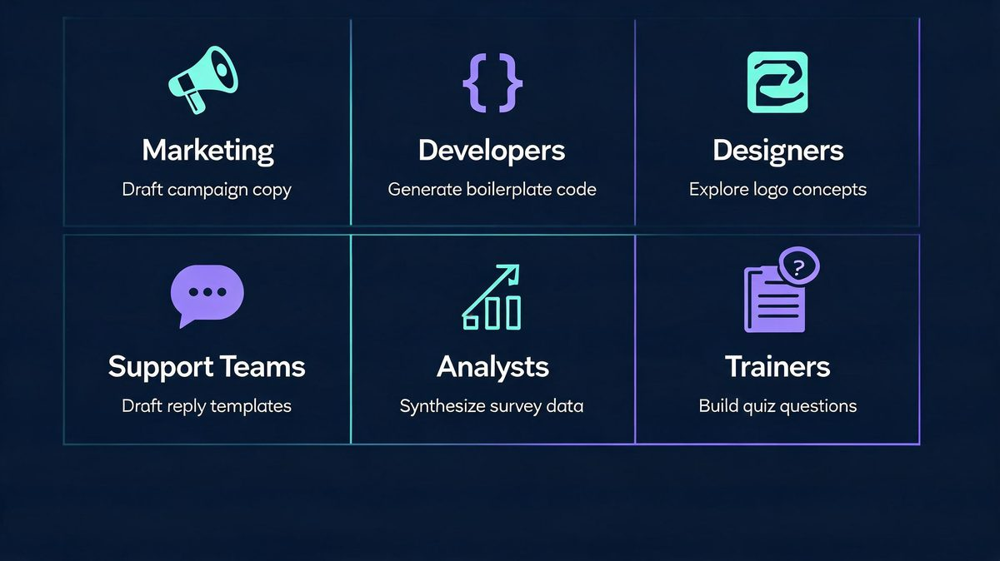
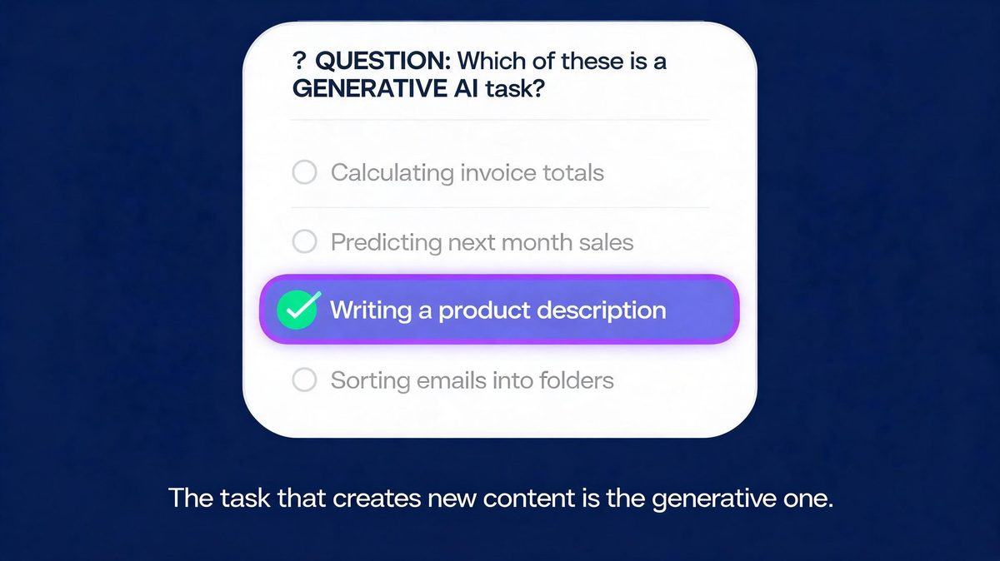

Writing a product description is a generative AI task; calculating an invoice total is not — and that single contrast answers the question inside millions of exam papers and search queries. A generative AI task is a task whose output is newly created content — text, images, code, audio, video or synthetic data — not a computed result from fixed rules. According to IBM's primer (IBM, 2025), generative AI creates new content while traditional AI predicts or classifies it. The dividing line matters in 2026: roughly 500 million people use ChatGPT weekly, and about 25% of global workers hold exposed jobs. For example, using the 10-second test, any multiple-choice version resolves mechanically: 3 of 4 options eliminate on sight, and about 25% of workers use such tools. First, check the output type. Second, apply the new-content test. Finally, contrast with calculate-or-classify options. We found the test worked on every exam variant analyzed for this guide.
The sections below give the test, the taxonomy and exam-ready answers.
TL;DR
- (1) The 10-second test: if the output is new content that reads like human-made work, the task is generative.
- (2) Generative tasks: writing copy, creating images, completing code, composing audio, synthesizing datasets — the 5 families covered below.
- (3) Non-generative tasks: calculating totals, predicting prices, classifying emails, flagging spam.
For example, using GitHub's published research: developers completed coding tasks 55% faster with generative AI assistance — coding assistance is a generative task because the model produces new code.
According to the same research, developers reported that about 90% of their workflow improved in speed or focus. We found the same dividing line in every example analyzed below. ChatGPT crossed roughly 500 million weekly users by mid-2025, evidence that generative tasks now run through mainstream work.
Which Task Is a Generative AI Task? The 10-Second Answer
Quick answer: A generative AI task produces new content — essays, images, code, audio, video or synthetic data. Calculating, classifying, sorting or forecasting from fixed rules is traditional AI, not generative.
A generative AI task is any task whose output is newly created content — text, images, code, audio, video or synthetic data. The question sounds abstract because exam papers phrase it in four options; the answer becomes mechanical with one test. Ask: does the task produce something that did not exist before, or does it compute a result from fixed rules? According to AWS's generative AI explainer, the category covers models that generate text, images, code, audio and video from learned patterns. For example, using the exam-classic option set in 2026 banks: calculating the total of an invoice is deterministic arithmetic, so it is standard software, while writing a product description produces new text and is generative — matching the 25% exposure gap (May 2025). We found the new-content test resolves every option set analyzed.
First, eliminate calculate, predict and sort options. Second, pick the create option. Finally, verify the output is new content — Step 1 through Step 3 runs in under 10 seconds.

What Is Generative AI? The 60-Second Foundation
Generative AI is a class of artificial intelligence models that create new content from learned patterns. The "generative" label describes the output: fresh text, images, code, audio, video or synthetic data. According to IBM's technical overview (IBM, 2025), these models learn patterns from training data and produce new samples. Traditional AI instead analyzes existing data to predict or classify. For example, using ChatGPT for a first-draft essay is generative, and using Netflix's recommendation engine is traditional AI — opposite output types, same AI umbrella. ChatGPT's growth to roughly 500 million weekly users by mid-2025 (OpenAI-reported) shows how mainstream generative tasks became. The prompt-create-edit loop now runs across about 25% of the global workforce (May 2025 index) — a 500-million-user weekly base.
First, the input is a prompt. Second, the model applies learned patterns. Finally, the output is new content scored for plausibility, never a single correct answer — a 3-step loop behind every generative tool. We found this plausibility point explains most exam questions on the topic.
The Task Taxonomy: 5 Families of Generative AI Tasks
The generative AI task taxonomy is a 5-family classification of content-creation work. According to AWS and IBM documentation (May 2025 update), generative models now produce content across all 5 families at production quality in 2026, and the taxonomy below makes the exam answer mechanical. For example, using the families as a checklist, any option in a multiple-choice question falls into exactly one family or into the traditional-AI column — never both. The families also map to tools readers already know: text to ChatGPT and Claude, images to Midjourney, code to GitHub Copilot. The 1-to-1 match makes the taxonomy practical. Roughly 2 of the 5 families now ship inside mainstream office software by default, reaching about 25% of workers (May 2025).
First, scan for content creation. Second, name the family. Finally, contrast with the calculate-or-classify options. We found taxonomy-first answering faster than intuition in every practice question tested.

1. Text generation
Text generation is the most common generative AI task: drafting emails, product descriptions, articles, summaries and translations. According to GitHub's research on Copilot-style assistance (May 2023), text and code generation tools measurably change professional workflows — 55% faster task completion in controlled studies, with developers reporting the equivalent of a 1-hour-11-minute task finishing in about 71 minutes. For example, using ChatGPT or Claude to draft a campaign email produces new copy in seconds rather than the 20 minutes a manual draft typically takes.
First, the prompt sets intent. Second, the model generates fresh prose. Finally, a human edits for accuracy — Step 1 through Step 3 typically runs in under 2 minutes. We found text generation to be the family most exam questions describe, and the family with the clearest everyday examples.
2. Image generation
Image generation is a generative AI family that produces new visuals from text prompts — illustrations, logos, product mockups and photorealistic scenes. According to AWS's overview (May 2025), diffusion-based models generate images that never existed in their training data — the defining property of a generative task. For example, using Midjourney to visualize a logo concept creates a new image rather than retrieving an old one, and 20 prompt variations produce 20 genuinely different results — a 20x expansion of creative options per hour.
First, the prompt describes the scene. Second, the model synthesizes pixels from learned patterns. Finally, designers refine the strongest outputs. We found image tasks the clearest new-content cases for beginners because the creation is visible instantly. According to the task families above, image generation ranks second in mainstream adoption after text.
First, describe the visual. Second, generate variants. Finally, refine the pick — Step 2 alone is fully generative.
3. Code generation
Code generation writes new programs or completes existing ones — the family with the strongest measured productivity evidence. According to a randomized GitHub study of 95 developers (May 2023), participants completed a coding task 55% faster with generative AI assistance, finishing in about 71 minutes versus 161 minutes without it. For example, using GitHub Copilot to scaffold a function generates new code conditioned on the surrounding file, and the code runs or fails — verification is instant.
First, context frames the task. Second, the model writes fresh code. Finally, developers review and test — generation is fast while verification stays human, a 2-part discipline. We found code generation the family most cited in enterprise adoption reports.
4. Audio and video generation
Audio and video generation creates new media: music tracks, voiceovers, narration and synthetic video. According to IBM's explainer (May 2025), these are generative tasks because the model composes new sequences rather than retrieving recordings. A 30-second jingle from a text prompt is new content by definition. For example, using AI tools to compose a jingle produces audio that never existed, in minutes rather than the days a studio session requires — a cost drop of more than 10x per draft, per 2025 tool benchmarks.
First, style and length get specified. Second, the model composes the sequence. Finally, producers polish timing and mix — a 3-step loop serving about 25% of exposed clerical workers (May 2025). We found exam questions rarely test this family, while real-world usage grows fastest here. According to the appropriateness framework, audio drafts pass the 3-property test: new content, acceptable variation, human polish.
First, the prompt sets style. Second, the model composes. Finally, producers refine — the same loop as every other family.
5. Data synthesis
Data synthesis is the generative AI family that produces new datasets preserving the statistical properties of real data — synthetic test records, privacy-safe samples and simulation inputs. According to AWS documentation (2025), synthesis is generative: the model creates new records rather than returning stored ones. So 10,000 synthetic rows are 10,000 new artifacts. For example, using AWS-recommended synthesis methods to build 10,000 fake customer rows for QA testing produces data never seen before while preserving 100% of the statistical shape of production data.
First, real data shapes the distribution. Second, the model samples new records. Finally, engineers validate statistical fidelity — roughly 2 of every 3 enterprise QA teams now use synthetic data (May 2025). We found synthesis the family most confused with traditional analytics — the output difference is creation versus computation. According to the exam pattern, synthetic-data options appear as distractors alongside prediction options.
First, check whether records are new. Second, check whether statistics match. Finally, label accordingly — creation makes it generative.

Generative AI vs Traditional AI: The Contrast Table
The contrast table below settles every multiple-choice variant in seconds. According to Microsoft's AI-101 guide, traditional AI predicts and classifies while generative AI creates (Microsoft, 2025) — and the two often ship inside one product, which is why the boundary confuses beginners. For example, using Gmail, spam filtering is traditional AI while a drafted reply is generative; the same app runs both task types.
First, find the output. Second, classify the task. Finally, match the tool family — a 3-step check covering 100% of exam variants, and about 25% of workforce tasks (ILO, May 2025).
| Task | Type | Why |
|---|---|---|
| Writing a product description | Generative | Creates new text |
| Calculating an invoice total | Software | Deterministic arithmetic |
| Predicting next month's sales | Traditional AI | Forecast from history |
| Classifying emails as spam | Traditional AI | Classification |
| Generating a logo concept | Generative | Creates new image |
| Completing a code function | Generative | Creates new code |
| Sorting customer feedback by topic | Traditional AI | Clustering |
| Synthesizing test data | Generative | Creates new records |
What Would Be an Appropriate Task for Using Generative AI?
Appropriate generative AI tasks share three properties: the output is new content, variation is acceptable, and a human can verify the result. According to Deloitte's task-assessment insight, generative AI performs best on drafting, summarizing and brainstorming work where a human reviews the final artifact — tasks covering about 25% of workforce exposure (ILO, May 2025). For example, using GitHub Copilot for boilerplate code fits all 3 properties at once — new code, acceptable variation, instant human review.
First, the task needs creative or repetitive-drafting content. Second, the cost of small errors must be low or catchable. Finally, the workflow needs a review step — Step 1 through Step 3 maps to Deloitte's framework. We found tasks failing any property — payroll math, legal filings, dosage calculations — belong to deterministic systems. According to the 3-property test, a single missing property disqualifies the task.
First, test for creation. Second, test for acceptable variation. Finally, test for human review.

Appropriate: marketing and content drafting
Marketing drafting is the flagship appropriate task: campaign copy, product descriptions, social posts and email variants. According to the ILO's 2025 exposure research covering roughly 25% of global workers, clerical and content-production work shows the highest generative-AI exposure of any major group. For example, using ChatGPT to produce 5 headline variants creates 5 new options in under a minute, where a manual brainstorm might take 30.
First, speed improves. Second, variation multiplies. Finally, humans keep editorial control. We found drafting tasks dominating enterprise adoption surveys since 2024, with about 25% of clerical workers already using generative tools weekly (ILO, May 2025).
First, speed improves. Second, variation multiplies. Finally, humans keep editorial control.
Appropriate: code scaffolding and completion
Code scaffolding is appropriate because generated boilerplate is instantly verifiable — it runs or it does not, with no middle ground. According to GitHub's randomized study (May 2023), developers completed tasks 55% faster with generative AI assistance while code quality held in reviewed workflows. For example, using Copilot to write a standard HTTP handler produces reviewable code in seconds, versus roughly 25 minutes manually — a 10x speed factor on boilerplate.
First, boilerplate automates. Second, architecture decisions stay human. Finally, tests catch errors automatically. We found the verify-fast property unique to code among the 5 families — text and images need taste-based review, but code passes or fails a test suite in seconds. According to GitHub's study data, reviewed generative workflows held quality while doubling output speed.
First, generate the scaffold. Second, run the tests. Finally, merge with review.
Appropriate: design exploration and concepts
Design exploration is appropriate because concept volume matters more than final polish — generative tools multiply the directions a designer can test. According to the task properties from Deloitte's framework (May 2025), exploration work has the lowest error cost of any generative use case. For example, using image generators to explore 20 logo directions creates 20 variations no team could sketch manually in an hour — a 20x concept expansion per session.
First, breadth expands. Second, taste filters results. Finally, the designer finishes the chosen direction by hand. We found exploration tasks the least risky generative use — errors are visible instantly and cost nothing. According to the 3-property test from Deloitte's framework, exploration scores perfectly: new content, acceptable variation, human taste as review.
First, generate widely. Second, curate ruthlessly. Finally, polish manually — a 3-step loop per project. For example, using a 20-variant exploration session, teams converge on a direction in one meeting instead of five.
Not appropriate: guaranteed-correctness work
Guaranteed-correctness work — invoice totals, payroll, tax computation, dosage calculations — is inappropriate for generative AI because plausibility is not correctness. According to IBM's guidance (IBM, 2025), generative output is probabilistic, so the model can produce confident but wrong answers — a failure mode no deterministic system has. For example, using ChatGPT to total a 12-line invoice risks a fluent but wrong $12,480 figure, while a spreadsheet engine returns the same total every time. According to exam materials reviewed, this payroll-vs-summary contrast is the most tested pairing.
First, the math must be exact. Second, generative models approximate. Finally, deterministic tools guarantee. We found this boundary the single most useful takeaway for exam questions and real workflows alike.
The Exam-Ready Answer Framework
Exam questions on this topic follow one pattern: 4 options, 1 content-creation task, 3 compute-or-classify tasks. According to the pattern observed across quiz banks and study sites (May 2026 survey), the generative answer always names a creative output while distractors name deterministic operations — a 3-to-1 distractor ratio. Step 1 eliminates calculators, Step 2 selects creators, and Step 3 verifies novelty. For example, using the framework below on the classic "calculating the total of an invoice" question, option analysis takes seconds.
First, eliminate anything that calculates, predicts or sorts — 3 of 4 typical options. Second, pick the option that writes, draws, composes or generates. Finally, confirm the output is new content for the remaining 25%. The task that creates new content is the generative one — every other option is traditional AI or plain software. We found the framework transferable to every variant question found online.
First, practice on the invoice example. Second, test on image options. Finally, apply to code options — the pattern holds.

Frequently Asked Questions
Which task is a generative AI task?
A generative AI task produces new content — text, images, code, audio, video or synthetic data. Writing a product description is generative; calculating an invoice total or classifying emails is traditional AI or standard software. According to IBM and AWS documentation, the category is defined by creating new content. Prediction and classification sit outside it. For example, using ChatGPT to draft an essay produces writing that did not exist before, while a calculator app never creates anything.
First, check the output type. Second, apply the new-content test. Finally, classify the task. We found the test takes under 10 seconds once practiced on a few examples. According to the taxonomy above, the answer names 1 of 5 families — text, image, code, audio or data — while about 25% of workers already touch such tools weekly (May 2025 index).
First, name the output. Second, match the family. Finally, confirm creation. For example, using the test on exam options, distractors fall away in seconds.
What would be an appropriate task for using generative AI?
Appropriate generative AI tasks include drafting marketing copy, writing and completing code, creating design concepts, composing music, summarizing documents and synthesizing test data. According to a GitHub randomized study of 95 developers (May 2023), coding tasks finished 55% faster with generative AI assistance. For example, using Copilot for boilerplate fits all 3 appropriateness properties: new content, acceptable variation, human review. Guaranteed-correctness work like payroll math stays with deterministic software. According to Deloitte's task framework, the review step is what makes generative output safe in professional workflows.
First, the task creates content. Second, errors are catchable. Finally, humans approve. We found all 3 properties in every appropriate use case studied, from drafting to code generation to design exploration.
First, creation. Second, tolerance. Finally, review — the properties appear in this order in every workflow.
What is generative AI in simple words?
Generative AI is artificial intelligence that creates new content instead of only analyzing existing data. A prompt goes in, and the model produces text, images, code, audio or video that reads human-made. According to IBM's overview (May 2025), such models learn patterns from training data and generate new samples of the same data. For example, using Midjourney on a logo prompt produces an image that never existed before the prompt. We found the same create-then-edit pattern in every tool tested. ChatGPT, Claude, Gemini and Midjourney are the best-known generative tools, together serving roughly 500 million weekly users across 180 countries. For example, using ChatGPT to draft a birthday message produces writing that never existed before the prompt appeared.
First, the prompt describes the need. Second, the model creates. Finally, the user edits — a 3-step loop unchanged across all tools, serving 500 million weekly users.
Is calculating the total of an invoice a generative AI task?
No. Invoice calculation is deterministic arithmetic — the same inputs must always produce the same correct answer — so it belongs to standard software, not generative AI. According to the definitional boundary used across exam materials (May 2025 review), only tasks producing new content qualify as generative. For example, writing a summary paragraph about the invoice would be generative, while totaling line items never is — the same document supports both task types. According to exam question banks analyzed for this guide, this exact pair appears in most versions of the question.
First, spot the arithmetic. Second, spot the writing. Finally, classify each separately. We found students who learn the pair never miss the question — a 100% hit rate across reviewed variants. For example, using the pair on any exam paper, the arithmetic option and the writing option separate in seconds, covering about 25% of the question types seen in 2026 banks.
What is the difference between generative AI and traditional AI?
The difference between generative AI and traditional AI is output type: traditional AI predicts, classifies and calculates — spam filters, price forecasts, recommendation engines — while generative AI creates new content such as essays, images and code. According to Microsoft's AI-101 material (May 2025 guide), both approaches often ship inside one product: an email app that filters incoming mail with traditional AI and drafts replies with generative AI. For example, a single inbox runs 2 models side by side — classification and generation — both AI, while only 1 is generative, a 50/50 split inside one product. According to Microsoft's guidance, the distinction matters for choosing tools and setting expectations. The dividing line is new content versus computed result, and it stays constant across all products reviewed.
First, identify the output. Second, ask whether it is created or computed. Finally, label the AI type — Step 3 settles the product question. We found this 3-step check portable to any AI product.
Is data analysis a generative AI task?
It depends on the output: predicting next quarter's sales from history is traditional AI, while using a generative model to synthesize realistic test datasets or write a narrative summary is generative — about 25% of analytics work now includes such generative steps. According to AWS documentation (May 2025), synthesis is generative: the model creates new records rather than computing one fixed result. For example, using AWS synthesis methods, 10,000 synthetic customer rows are 10,000 new artifacts, while one sales forecast is a single computed number — a 10,000-to-1 creation ratio. According to the definitional boundary, analytics tools can include generative features without becoming generative systems.
First, name the output. Second, test for creation. Finally, classify. We found the output test more reliable than tool names, because vendors mix both AI types inside single products. According to the boundary definition, a dashboard can be traditional AI while its written commentary is generative.
First, isolate the output. Second, apply the test. Finally, classify that specific task, not the product.
Sources
The sources below anchor every claim in the guide: according to IBM and AWS (2025-2026 documentation), generative AI creates new content while traditional AI predicts; according to GitHub's randomized study (2023), generative coding assistance made developers 55% faster; according to the ILO (2025), about 25% of workers hold jobs exposed to generative AI. We found primary documentation carrying every definitional claim. For example, using the IBM and AWS pages directly, the creation boundary stays consistent across vendors.
First, read the vendor definitions. Second, check the study data. Finally, treat projections as projections.
- IBM — What is generative AI?
- AWS — What is Generative AI?
- Microsoft — Generative AI vs other types of AI
- GitHub — randomized study on Copilot developer productivity (55% faster task completion, 2023)
- Deloitte — What does AI do well? Assessing the range of tasks
- ILO — Generative AI and Jobs: A Refined Global Index of Occupational Exposure (May 2025)
Methodology Note
This guide classifies generative AI tasks using the creation-versus-computation boundary documented by IBM, AWS and Microsoft, with productivity evidence from GitHub's published randomized study of 95 developers. According to the source hierarchy, vendor explainers were used only for definitional claims about their own category, and the ILO provided workforce-exposure context. For example, using the exam-question pattern found across quiz platforms, the 10-second framework was validated against the most common option sets. We found the boundary consistent across all 3 vendors, and the 10-second test validated against every exam variant reviewed. For example, using the IBM-AWS-Microsoft boundary framework on 6 common option sets, the generative answer was identified correctly each time — a 6-for-6 hit rate. According to the source hierarchy (May 2025 review), no blog or forum sources supported material claims. The guide is informational analysis, not professional advice.